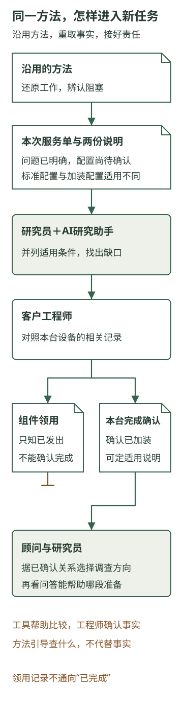

从留下资料到形成可复用的企业能力
咨询公司已经把一次研究的材料、判断依据和后续修订保留下来。下一位研究员接手时，可以沿着这些内容继续调查，不必先找原同事恢复全部背景。这样的接续很有价值。但如果换一家客户，他能否仍然把工作做出来？
企业真正希望得到的，是更多人能够承担一类工作。例如，新研究员也能判断客户的等待发生在哪里，选择适合调查的AI用途，并说清下一步还需要什么。过去的底稿能提供起点，这种能力还要在新的条件下形成。
下面继续使用前章的AI行业研究咨询公司，安排一项新客户委托。客户、资料片段和研究助手的分析均为教学示例。
一、问题已经说清楚，为什么还在等专家
这次接手的是一位没有参加上期研究的同事。新客户同样是一家设备制造企业，希望让服务新人借助多文档问答准备答复。负责人说：“我们的问题通常写得很清楚，手册也能找到，可新人还是要找工程师确认，能不能用AI少等一会儿？”
研究员读过上期底稿，知道等待可能发生在取得事实、查找资料、判断适用性或准备建议。他没有直接沿用“先帮助问清现场情况”的做法，而是请负责人拿出一段实际工作。
这段服务咨询只有一个问题：“这台甲型设备能否远程读取运行记录？”设备型号、所在客户和要了解的功能都已说明，服务人员也已找到两份相关文档。
| 本次材料 | 其中的说明 |
|---|---|
| 标准配置手册 | 运行记录通过设备本机导出；适用对象是标准配置设备 |
| 通讯扩展组件说明 | 完成相应加装后，可以远程读取记录；适用对象是已装扩展组件的设备 |
| 这次服务单 | 写明了甲型设备和客户，尚未说明该台设备是否经过加装 |
两份文档不是简单的“旧答案”和“新答案”。后发布的扩展说明，可能增加了一种配置的用法，却没有让所有同型号设备都具备这项能力。如果只按更新时间选择文档，便可能用对了文字、用错了对象。
因此，这次等待与上期那段“偶发停机”的记录不同。服务人员已经知道客户要问什么，眼前缺的是把这台设备与适用说明对应起来的事实。继续追问故障现象没有帮助，多找几篇手册也未必解决问题。
研究员把服务单和两段原文交给公司的AI研究助手，请它比较：哪些内容相同，差异来自哪里，缺什么才能决定采用哪段说明。助手可以把“标准配置”和“已加装配置”列出来，指出型号本身还不能确定适用范围，并准备向客户询问配置依据的问题。
这份比较帮助研究员把问题收窄了。他不再笼统地问“问答产品准不准”，而是向服务负责人确认：当前服务人员能否取得具体设备的配置或改装记录，谁能够解释这些记录与手册的关系？
负责人于是请管理设备技术资料的工程师参与。工程师对照安装记录：领用记录显示组件已发出，另一份完成确认则对应到这台设备。后者使他能够确认设备已经加装，并指出应采用的扩展说明。咨询团队获得的是客户专业人员确认过的适用关系。研究助手可以整理和对照这些材料，咨询顾问可以据此判断研究方向；设备是否具备该配置，仍须由掌握实际记录的人确认。
现在，原问题才有了继续分析的条件：若服务人员在准备答复时能取得这样的对应关系，多文档问答就有机会帮助他们找到适用内容；若每台设备都要临时找工程师恢复配置，单纯改善文档搜索，还没有解决主要等待。
这次可以沿用的经验，是“还原一段工作，找出等待发生在哪里”。需要重新取得的，是新客户的设备与资料关系。方法帮助研究员发现该查什么，而不是替他预先给出答案。

二、让方法能够被别人用起来
上期研究员知道为什么要还原工作，是因为他参与过讨论。接手者只看到一句“先看实际工作”，可能仍不知道要问到什么程度。他把这次取材和比较带回，与顾问讨论：为什么这次没有继续补问现象，又凭什么转向配置记录？共同方法需要让他看见判断所依据的区别。
在这次讨论中，资深顾问把这层区别说清楚了：先确认服务人员已经知道什么，再看哪项未知使他无法往下做。如果不知道客户描述的是什么现象，就补问现象；如果问题清楚而文档适用对象不明，就取得对应事实；如果材料和适用关系都齐全，就观察准备答复还耗在哪里。三种情况不需要同一套追问。
这段解释把上期的经验发展了一步。“还原工作”不再只是请人讲一个故事，而是要找出：工作卡在什么判断上，谁掌握能使它继续的事实，什么帮助可以作用在那里。新研究员因此能自己组织下一轮取材，也更容易说明为什么某份材料值得取得。
不过，理解了方法，还需要有东西可用。研究员要能打开客户确认的手册，取得适用对象的说明，并把它与当前服务单放在一起；客户一侧也要有人提供配置依据。若资料入口失效、服务单没有标识到具体设备，或没有人承担适用性确认，再熟悉方法的人仍可能停住。
工具在这里负责帮助取得和处理信息。一个已接通资料来源的研究助手，可以查找相关原文、并列适用条件、整理需要核对的项目。没有接通时，研究员也可以把必要原文直接提供给它。无论采用哪种方式，都要使这次分析用上当前相关内容，而不只是知道公司“有一个资料库”。
责任则使未知能够有人接下去。咨询研究员组织问题和材料，顾问讨论研究选择，设备企业的专业人员确认本企业的事实。责任清楚并不是为每一项工作多设一层审批，而是避免一个大家都能看到的问题，最终没有人去取得答案。
这些条件合在一起，才形成可重复的工作：同事知道怎样发现问题，能取得必要事实，能借助工具完成比较，并且知道什么需要由谁确认。企业保留的因此不只是某位顾问写过的一句话，而是一种让不同人员能够继续做事的安排。
这家研究公司可以先让新同事独立承担资料取得、工作还原和初步比较，把真正影响方向的取舍带进专业讨论。原本每次都要由顾问从头询问的准备，有机会由更多人完成；顾问则把精力放在新的关系和重要选择上。共同能力可以从这样的分工中逐步长出来，不必等每位同事都达到资深顾问的全部水平。
三、标准化为什么仍要保留差别
工程师确认适用关系时，研究员还追问：为什么不能只采用那份组件领用记录？工程师解释，领用只说明零件已经发出，尚不能确认加装完成；要对照本台设备的完成确认，才能判断配置。这层识别不同记录含义的做法，原来没有写进咨询团队的方法。研究员把它与对应例子放进本次分析，下一位同事便有机会知道该查哪种依据，而不只是看到“已加装”这个结论。
这体现了数字化的一项实际作用。设备标识、适用文档、确认依据和当前问题成为可查找、可比较的材料，工作不必完全依赖某个人在场复述。企业可以逐步把关键状态和联系组织到日常工作里，不需要一开始就重建全部资料。
标准化处理的是另一层关系：同类工作中，哪些方法和要求值得共同采用。在这家公司，可以共同采用的是“先区分已知与阻塞判断，再取得能改变选择的事实”。面对资料冲突，要检查适用对象；遇到需要客户确认的事实，要有明确接手人。这些安排帮助不同人开始工作，却不要求他们得出相同结论。
把“标准查询优先”固定成一切客户的答案，反而会损害方法的价值。它原本是根据特定材料形成的研究选择；一旦脱离了为什么这样选，就容易从经验变成习惯。
商品上架项目的一份售前观察记录，提供了另一种容易混淆的情况：程序找到某个类目的通用属性模板，就把一个新商品案例显示为已经完成；但该案例自己的识别结果还没有产生，颜色、品牌、价格等信息仍为空。通用模板确实存在，本次商品工作却尚未做完。资料和方法已经准备好，与当前任务已经具备所需事实，是两回事。
回到咨询公司，上期方法已经保存，同样不表示新客户的配置已经查清。合理的标准化应当让人更容易识别这种差别：哪部分可以沿用，哪部分需要重新取得，哪项条件改变后应换一种做法。
有些现场判断仍需要一起做才能讲清。新人无法解释为什么采用某份说明时，可以请熟悉业务的人对照一个具体例子展开。能说清的关系进入方法，尚依赖专业辨认的部分继续保留相应分工。企业不必在“全部写成规则”与“只能靠老师傅”之间二选一。
四、换一种等待，看看能力有没有继续发挥作用
再改变一个条件。另一位服务负责人拿出的记录中，问题描述、设备配置和文档适用关系都很明确，新人也已经准备好了答复；客户却仍然要等，因为所有答复都要由一位负责人签字，而他只在固定时段集中处理。
沿前面的方法，研究员应当指出：这次主要等待发生在内部安排上。多文档问答可能减轻准备劳动，却不会增加负责人的可用时间，也不会自行改变谁能确认和发出答复。若客户要改善这段等待，就需要另行讨论哪些事项可以授权给服务人员，哪些必须保留专业确认，以及相应人员如何承担后果。
这项研究没有立即提出再购一种AI产品，却仍然使用了公司已有的方法。它帮助团队识别一条原方案不适用的边界，避免把每个“慢”都解释成资料问题。能够发现不该照搬，正是经验在新任务中发挥作用的一种表现。
企业由此可以更具体地判断自己留下了什么。原作者离开后，别人能否说明原判断为什么成立？客户条件变化时，团队能否取得新事实、调整方法，并完成相应工作？原工具用不上时，人们能否识别缺在哪里，而不是继续输出一份形式相同的建议？这些表现比资料数量更接近共同能力。
AI可以参与其中的阅读、比较、追问准备与修订，工具帮助取得当前信息，方法使这些动作有方向，人员和责任让尚未解决的判断有人继续处理。企业把这几方面组织在一起，才有机会让一次次积累进入更广泛的生产。
但能够培养的能力很多。更快查资料、更准确地识别适用性、更早发现客户的决策问题，都可能值得投入。企业还要继续判断：哪些变化是客户真正需要的，哪些只是自己做得更熟练。这决定了哪些能力值得进一步发展。
来源与延伸
《从真实工作到AgentOS能力资产》用于对照工作、方法、工具、责任与独立使用的关系；工作台整体能力与当前边界提供任务接手、采用版本和来源的组织参考。DeepAgents第8章说明保存、加载和更新需要分别安排，本文没有把保存文件等同于模型训练。
商品模板与本次识别结果混淆的例子，来自商品上架项目售前验收观察所记载的具体问题。这里采用售前观察的有限范围，没有据此推断客户经营效果。咨询情境用于展开能力形成的条件，不作为企业已经获得相应成效的记录。